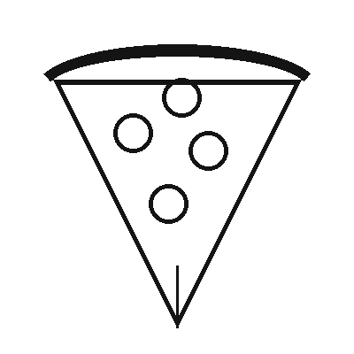

El Placer de la Pizza
Pedro Herrera Paredes
10/02/2023 - Una buena pizza empieza con una masa que reposa lentamente, una salsa de tomate sencilla y queso que se derrite justo en el momento de salir del horno. Compartirla con familia o amigos es parte de su encanto.

En Fornello Pizza preparamos cada masa a diario y usamos ingredientes frescos. Desde la clásica margarita hasta la pizza de cuatro quesos, cada receta busca el equilibrio entre una base crocante y un centro suave y lleno de sabor.
Pedir una pizza es fácil: elige tu sabor favorito, el tamaño y si la quieres para llevar, en el local o con delivery. Nosotros nos encargamos de que llegue caliente a tu mesa.